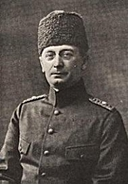

Friedrich Freiherr Kress von Kressenstein
(24 Nisan 1870 - 16 Ekim 1948)

Birinci Dünya Savaşı öncesinde Türk ordusunun ıslahı için Otto Liman von Sanders başkanlığında kurulan Alman askeri heyetinin bir üyesi olarak Türkiye‘ye geldi.
Cemal Paşa’nın Filistin’deki ordusuna askeri müşavir olarak katıldı. Sonrasında ordunun kurmay başkanlığına getirildi.
1915 yılı Ocak ayında yapılan Birinci Kanal Harekâtı‘na planlayıcı ve uygulayıcı olarak katıldı. Kress, Kanal‘ı geçmek için yapılan özel botlardan sorumlu olduğu gibi Sina çölünü geçişi de organize etmişti. Çölü çok az can kaybı ile geçerken, İngilizler yaklaşmalarından haberdar olmuşlar ve saldırı onlar için sürpriz olmamıştı. İki günlük çarpışmadan sonra Türk birlikleri kolayca geri püskürtüldü.
Bir yıl kadar sonra Türkler 2. kez Süveyş Kanalı‘na saldırdılar. Cemal Paşa harekâtı Şam’dan yönetti. Kress tekrar çölü geçen Osmanlı ordusundan sorumlu idi. Bu saldırı Romani’de güçlü bir İngiliz direnişiyle karşılaştı. Osmanlı ordusu yine geri püskürtüldü. Türkler Filistin’deki üslerine geri döndüler. (3 Ağustos 1916 )
İkinci Kanal Harekâtı‘nın başarısızlıkla sonuçlanması üzerine İngiliz karşı harekâtı başladı. Önce küçük Türk ileri mevzilerini zaptettiler. Çöl boyunca demiryolu ve su kanalları inşa ettiler. Daha sonra Gazze’deki Osmanlı mevzilerine saldırı için hazırlandılar. Kress Osmanlı ordusunu Cemal Paşa ile birlikte hazırladı. Mart 1917’deki Birinci Gazze Muharebesi’nde İngilizler mağlup edildiler. Ardından İkinci Gazze Muharebesi’nde (Nisan 1917) İngilizler yine yenildiler. Kress bu iki Gazze muharebesindeki başarısı ile adını duyurdu.
İngilizler Filistin cephesinde başarısız generallerini değiştirerek General Allenby’yi getirdiler. Osmanlılar da komutayı eski Alman Genelkurmay Başkanı General Falkenhayn’e verdiler. Kress Gazze’yi savunan 8. Türk Ordusu’nun komutanıydı. Aynı zamanda Prusya’nın en büyük nişanı olan Pour le Merite madalyasını aldı.
Kasım 1917’de, General Allenby komutasındaki İngilizler Birüssebi Muharebesi ve Üçüncü Gazze Muharebesi sonucunda Osmanlı savunmasını darmadağın ettiler. Kress, Falkenhayn tarafından bu savaşta alınan mağlubiyetin sorumlusu tutularak görevinden alındı ve Almanya’ya döndü.
1918’in ortalarında Rus ordusunun çekilmesiyle Kafkasya’da, Osmanlı Devletiyle Almanya arasında yaşanan nüfuz mücadelesinde Kress Alman menfaatlerini korumak üzere Gürcistan’a gönderildi. Kızıl Ordu’nun Abhazya’yı işgal edişini durdurmaya yardımcı oldu.
Kress Alman Ordusundan 1929’da emekli oldu. 1948’de Münih’te öldü.